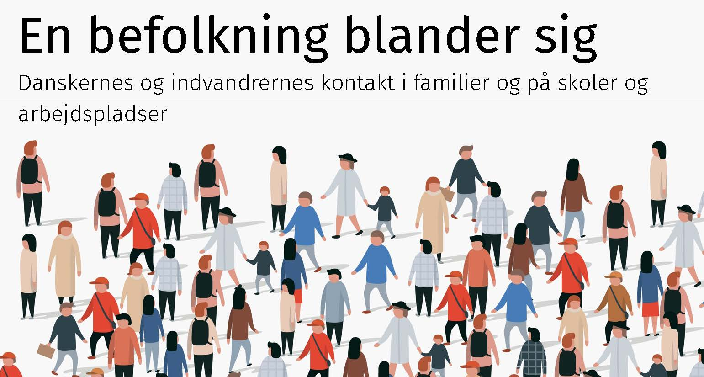

En befolkning blander sig
Kontakt mellem majoriteten og ethniske minoriteter i Danmark
2025-02-13 14:51:13

Bogen er baseret på forskningsprojektet ”Measuring intense migrant-native contact and its concequences” (MNcontact), der var finansieret af Den Fri Forskningsfond i perioden fra 2019 til 2025. Bogen er en formidlingsbog, der er baseret på projektets datamateriale og forskningsresultater.
Projektgruppen har bestået af undertegnet, Jeppe Fjeldgaard Qvist1, Lanciné Eric Diop-Christensen, Hans-Peter Y. Qvist, Jeevitha Y. Qvist, Troels Fage Hedegaard og Anna Diop-Christensen (i tilfældig rækkefølje). Gruppen har i forskellige konstellationer publiceret en række videnskabelige publikationer og flere er på vej. De er samlet på projektets hjemmeside.
Undervejs har vi arbejdet tæt sammen Anders Bastrup Jørgensen, der skrev Ph.D-afhandling om indvandrere og efterkommeres deltagelse i frivillige foreninger. Vi har også arbejdet sammen med Rolf Lyneborg Lund og Anja Jørgensen, der i samme periode analyserede spørgsmålet om indvandrere- og efterkommeres boligmæssige placering.
Vi ønsker alle en god læselyst
Aalborg 2025
Forskningsleder på MNcontact.
Professor, Institut for Politik og Samfund
Aalborg Universitet
Jeppe Fjeldgaard Larsen i publikationer før 2024.↩︎